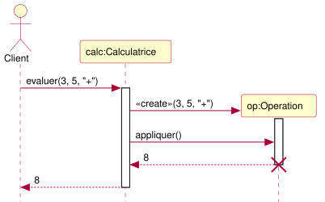

Cas : Client demande à Calculatrice d'évaluer 3 + 5. calc instancie une Operation temporaire pour porter les opérandes, lui demande appliquer(), récupère 8, détruit l'objet, retourne.
Objets & lifeline
nom:Classe (deux-points entre l'instance et son type).Flèches
Création / Destruction
«create» sur une flèche pleine = appel constructeur. La lifeline cible naît à la pointe (rectangle d'instance apparaît à hauteur du message, pas en haut).destroy). Sémantique : objet sorti de portée, GC, ou fermeture explicite (close(), dispose()).Mantra : pleine pour appeler, pointillée pour retourner. «create» fait naître, ✕ fait mourir.
Le Sujet notifie ses Observateurs automatiquement quand son état change.
interface Observateur { void notification(); }
class Sujet {
private List<Observateur> obs = new ArrayList<>();
private int valeur;
public void inscrire(Observateur o) { obs.add(o); }
public void desinscrire(Observateur o) { obs.remove(o); }
public void setValeur(int v) {
this.valeur = v;
for (Observateur o : obs) o.notification(); // notifier tous
}
}Cas Q6 2024 : seuil logger = min des seuils sorties → inscrire le logger comme observateur de chaque sortie ; à chaque setSeuil(s), la sortie notifie le logger qui recalcule.
Système composite que le sujet construit toujours : un Pilote contient des Services pluggables, factorisés par une classe abstraite, déclinés en concrètes.
[Pilote] ◇—* [Service] «interface»
▲ implements
[ServiceAbstrait] ← factorise (seuil, helpers…)
▲ extends
┌──────────┴──────────┐
[ServiceA] [ServiceB]public interface Service { void publier(Info i); int getSeuil(); void setSeuil(int s); }
public abstract class ServiceAbstrait implements Service {
private int seuil;
public ServiceAbstrait(int seuil) { this.seuil = seuil; }
public int getSeuil() { return seuil; }
public void setSeuil(int s) { this.seuil = s; }
}
public class ServiceA extends ServiceAbstrait {
public ServiceA(int seuil) { super(seuil); }
public void publier(Info i) { /* impl A */ }
}→ Thème inconnu (cache, parser, event-bus, agenda…) ? Pose-toi : qui est le Pilote ? le Service pluggable ? qu'est-ce qui se factorise ? Tu retombes sur ce squelette en 2 min.
public class Logger {
final private String contexte;
final private Niveau seuil;
public Logger(String contexte, Niveau seuil) {
this.contexte = contexte;
this.seuil = seuil;
}
public Logger(String contexte) {
this(contexte, Niveau.AVERTISSEMENT); // chaînage de constructeurs
}
protected void log(String contexte, Niveau niveau, String message) {
InfoLog info = new InfoLog(contexte, niveau, message);
if (niveau.compareTo(this.seuil) >= 0) { // enum implémente Comparable
System.out.println(info);
}
}
final public void debug(String m) { log(contexte, Niveau.DEBUG, m); }
final public void info(String m) { log(contexte, Niveau.INFO, m); }
final public void avertissement(String m) { log(contexte, Niveau.AVERTISSEMENT, m); }
final public void erreur(String m) { log(contexte, Niveau.ERREUR, m); }
final public void fatal(String m) { log(contexte, Niveau.FATAL, m); }
}Points-clés : 2 constructeurs (le 2ᵉ délègue via this(...)) · final private (style prof) · final public void sur les 5 publiques (anti-override) · 1 méthode protected log(...) qui factorise · compareTo car enum est Comparable.
| Étape | Quand | Quoi | Selon quoi |
|---|---|---|---|
| Compile | au build | choisit la signature | type DÉCLARÉ du récepteur + type DÉCLARÉ de l'arg |
| Runtime | à l'exécution | choisit l'implémentation | type RÉEL du récepteur (override le + dérivé) |
Mantra : type déclaré → signature ; type réel → implémentation.
A a = new C(); a.m(unU) où A n'a que m(D) → EC, même si C a m(U).A a = new C(); B b = (B) a; → ClassCastException si C n'est pas un B.B.m(U) ne remplace PAS A.m(D), il l'ajoute. A.m(D) reste héritée.m(U) et m(D) héritée et qu'on passe un D → m(D) gagne.| Implémentation | Interface | get(i) | add | contains | Ordre |
|---|---|---|---|---|---|
ArrayList | List | O(1) | O(1)¹ | O(n) | insertion |
LinkedList | List, Deque | O(n) | O(1)² | O(n) | insertion |
HashSet | Set | — | O(1) | O(1) | aucun |
LinkedHashSet | Set | — | O(1) | O(1) | insertion |
TreeSet | Set, SortedSet | — | O(log n) | O(log n) | tri naturel/Comparator |
HashMap | Map | — | O(1) | O(1) | aucun |
TreeMap | Map, SortedMap | — | O(log n) | O(log n) | tri des clés |
¹ amorti en fin / O(n) au milieu. ² avec Iterator courant / O(n) sinon.
containsKey(K) / containsValue(V) / keySet() / values() / entrySet().map.computeIfAbsent(key, k -> new V()) — get+put atomique. Pratique cache (Q5.2 sujet 2024).get(i) en O(1). Permet : if (l instanceof RandomAccess) for(i)... else for-each.a.equals(b) ⇒ a.hashCode() == b.hashCode(). Si tu redéfinis equals sans hashCode → HashSet/HashMap silencieusement cassés.public class Vue {
private JTextField zone = new JTextField(10);
private JButton bouton = new JButton("OK");
public Vue() { bouton.addActionListener(new ActionBouton()); }
class ActionBouton implements ActionListener {
@Override public void actionPerformed(ActionEvent ev) {
System.out.println(zone.getText());
}
}
}3 variantes : classe membre (ci-dessus) · classe anonyme new ActionListener() { ... } · lambda ev -> .... EDT : EventQueue.invokeLater(() -> new MaFenetre()). Pour add() à chaud : container.revalidate(); container.repaint();.
public class VueSwing {
final private JFrame fenetre = new JFrame("Titre");
final private JTextField zone = new JTextField(10);
final private JButton ok = new JButton("OK");
public VueSwing() { initComponents(); fenetre.pack(); fenetre.setVisible(true); }
private void initComponents() {
JPanel p = new JPanel(); // FlowLayout par défaut
p.add(new JLabel("Saisie : "));
p.add(zone);
p.add(ok);
fenetre.getContentPane().add(p); // BorderLayout par défaut → CENTER
ok.addActionListener(ev -> System.out.println(zone.getText()));
}
public static void main(String[] args) { EventQueue.invokeLater(() -> new VueSwing()); }
}public class IntegerField extends JTextField {
public IntegerField() {
super(10);
addMouseListener(new MouseAdapter() { // override partiel
@Override public void mouseEntered(MouseEvent e) {
IntegerField.this.setBackground(Color.WHITE);
}
@Override public void mouseExited(MouseEvent e) {
try {
Integer.parseInt(IntegerField.this.getText());
IntegerField.this.setBackground(Color.WHITE);
} catch (NumberFormatException ex) {
IntegerField.this.setBackground(Color.RED);
}
}
});
}
}IntegerField.this (et non this) pour référencer l'instance englobante depuis la classe anonyme.
| Notation | Sens | Java |
|---|---|---|
A ──▷ B (triangle plein) | A hérite de B | class A extends B |
A ┄┄▷ I (triangle pointillé) | A réalise I | class A implements I |
A ◇─── B (losange creux) | A agrège B (B vit aussi sans A) | attribut B b |
A ◆─── B (losange plein) | A compose B (B ne vit pas sans A) | attribut + cycle de vie lié |
1, *, 0..1, 1..* | multiplicités | scalaire / Collection<B> |
Visibilité : + public, # protected, - private. Séquence : «create» = appel constructeur · activation = bande verticale · croix × en bout de lifeline = exception/destruction · auto-appel = arc retour.
public static void main(String[] args) {
try {
// ... tout le code main initial
nombre = Integer.valueOf(args[0]);
} catch (NumberFormatException e) {
logger.fatal("Pas un nombre !");
System.out.println("Le paramètre doit être un entier.");
}
}NumberFormatException ⊂ IllegalArgumentException ⊂ RuntimeException (unchecked, mais attrapable). Try DANS la boucle : on continue après l'exception. Try AUTOUR : on arrête au 1er échec.
final private sur attributs (ordre inversé vs Sun, mais cohérent dans le corrigé)final public void sur méthodes pour empêcher l'override accidentel@Override systématiqueavertissement, ajouterSortie, supprimerSortie, publierimport java.util.* si code completthis(...) pour chaîner constructeurs · super(...) pour parentprotected pour méthodes factoriséesm(D) gagne sur m(U) quand l'arg est D.EventQueue.invokeLater.protected qui factorise (Logger : 5 niveaux → log(...)).Map<String,T> + computeIfAbsent.| Min | Action |
|---|---|
| 0-5 | Lecture, mapper sur §11 |
| 5-25 | Exo 1 (~14 pts) — §4 + §10.1 + §6 + §1 |
| 25-35 | Exo 2 (~3 pts) — wrap-main §8 |
| 35-55 | Exo 3 (~6 pts) — squelette §3 |
| 55-80 | Exo 4 (~10 pts) — UML §7 + §2.bis |
| 80-85 | Exo 5 (~4 pts) — Map + computeIfAbsent |
| 85-90 | Exo 6 (~3 pts) — patron (Observateur §2) |
Si cales >2 min : passe, reviens à la fin. Toutes les réponses sont sur cette feuille.